What's ready to post this week, what each piece needs from you, Con's carousel with the boot fixed, and three borrowed clips to open the scooter-style video. Your calls go in the poll at the bottom.
Open the poll| Mon 12 | Nothing ready for the trust slot. Goes dark unless you want Con's carousel here instead of Thursday. |
| Tue 13 | Things You Only Hear At Work, Lionel's re-export is in. One call: a company name on a shirt in the first second. |
| Wed 14 | Flex. Nothing lined up. |
| Thu 15 | Con's two truths carousel, boot fixed. One fact only you know. |
| Fri 16 | What You Want To Say, Lionel's 21 Aug cut. Never posted, and free to go now Con's intro has run. |
Last week went out in full: the Burnout Mon, the stitch-up Tue (16,355 views, the week's best), the boot fly-in Wed, the doormat carousel Thu, SITE FILE Fri. The first production pair lands around 15 or 16 Oct; a first look at it is the obvious trust piece for Monday 19.
You were right on both. Slide 1 had two zips on one boot and the laces stopped halfway down. Slide 2 had the black at the back wrong. How it happened: I checked the badge and which side the zip was on, and never counted the zips or followed the laces. Slide 1 was built from the old-boot picture, whose laces were undone and trailing on the step, so our boots copied that. From now on the check covers zip count, lace path and the black panels, not just the badge.
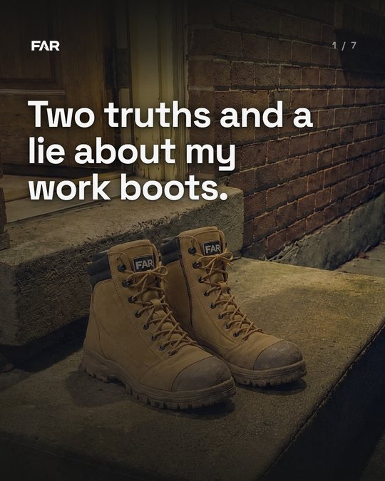
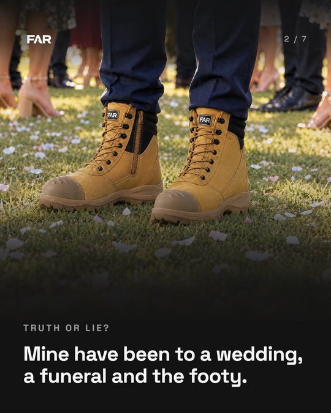
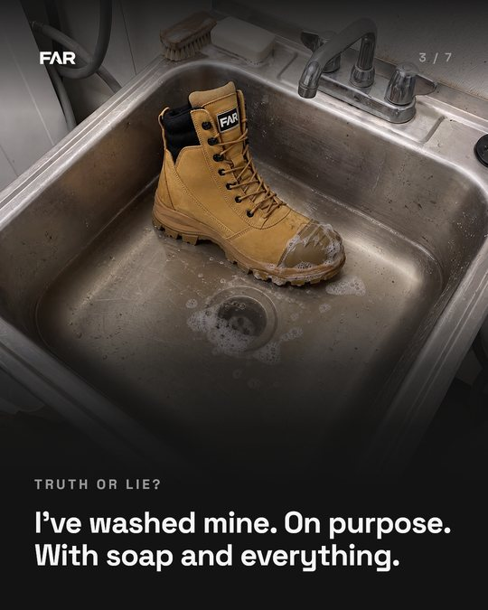
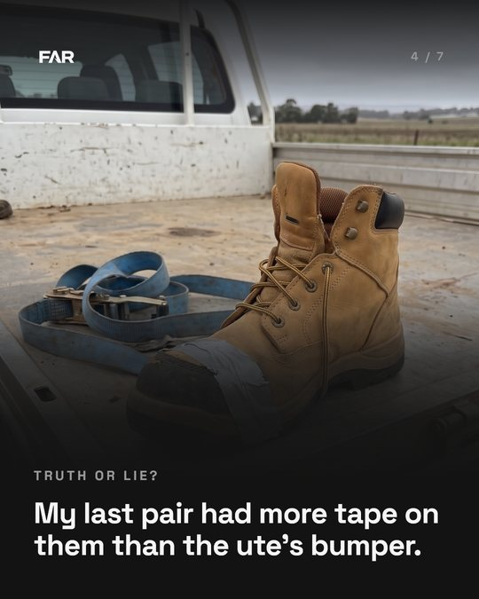
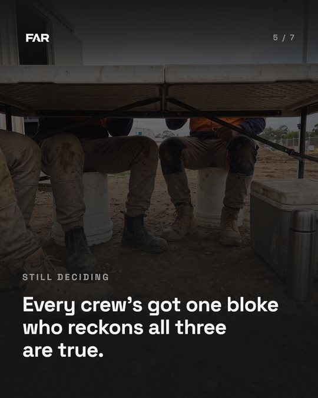
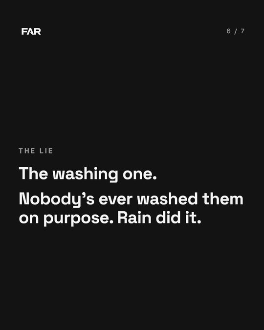
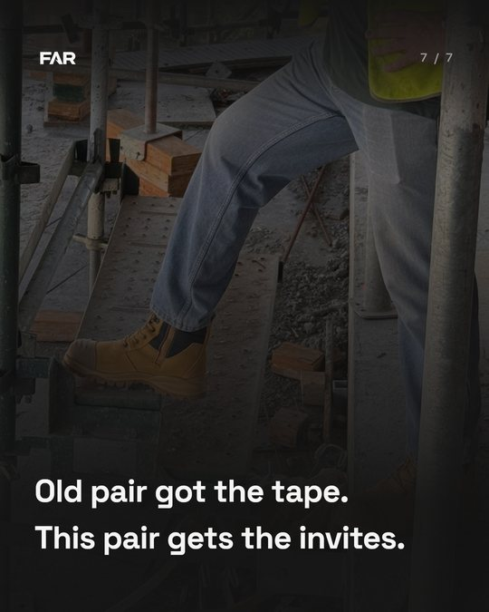
The deck as the dashboard draws it, with your calls in: slides 4 and 7 carry the copy fix, Dave's photo is legs only on 7, slide 6 stays black. Open it on the dashboard.
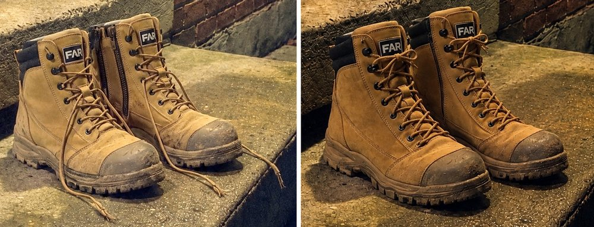
Left is what you saw. Right: one zip on each boot, on the inside, laced through every hole to the top and tied.
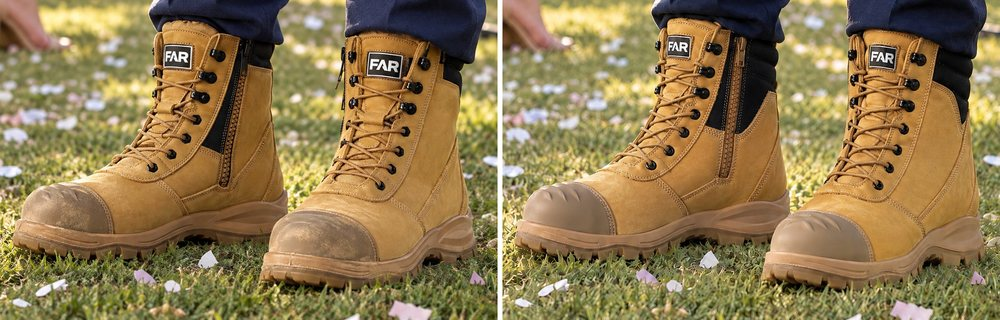
Right: the big black padded panel now runs behind the zip and round the back of the collar like the real boot, and the toe caps have their ridges. The second try drew the A icon on the tongue instead of FAR, so I moved the FAR badge across from the first try. Same scene, same light, no credits.
One thing no generated pair has got yet: the tan velcro tab over the top of the zip. At this size nobody will see it.
5.5 credits on three tries, 95.48 left.
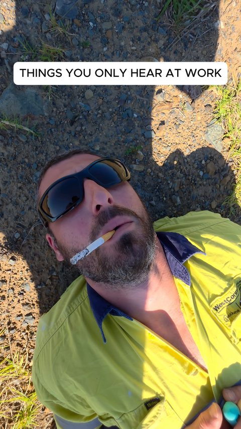
Lionel's re-export with the new title is in the Week 42 folder. I watched it: 1 minute 15, a list of site one-liners, and the caption you already passed still fits.
The catch is the very first shot. The bloke lying on the ground with a smoke has "WestConnex" and "acciona" stitched on his shirt: a real motorway job and the company that builds it. It's on screen for a second, under the title, on a video about bludging at work. The Old Fella came down through an employer report, and this would put an employer's name in our first frame.
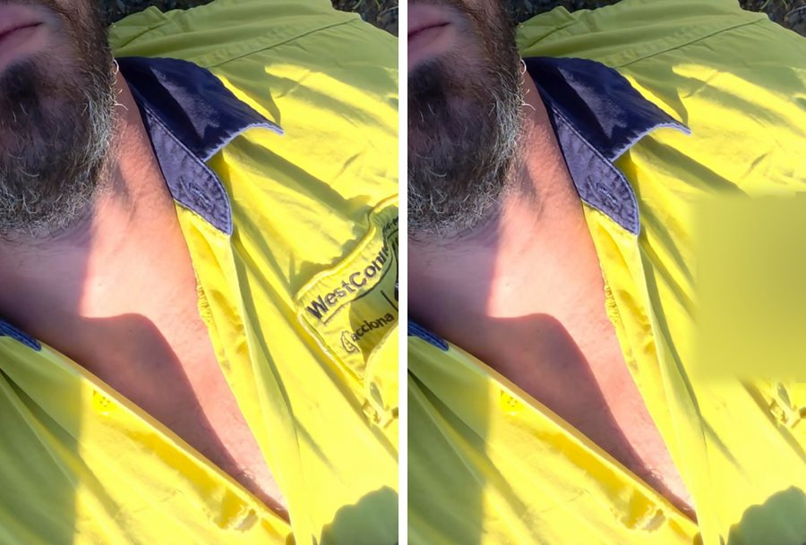
So I made a second version with the lettering blurred for that first second only. Everything else is Lionel's edit, untouched. In the shots after that he's too far away to read.
The black cap is Ringers Western and the shorts have a gym brand's bull on them. Same as the Komatsu cap you cleared before, so nothing to do.
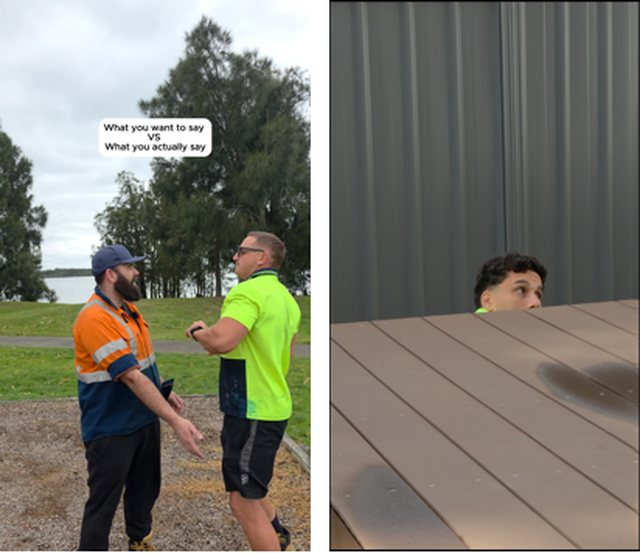
Lionel's 21 Aug cut already does what the old plan wanted: it opens on two blokes squared up, runs the Raptor and the rake skits as "what you want to say" against "what you actually say", then pool versus deck, and ends on the peek over the deck. 1 minute 27. It's never been posted.
Caption and the THE FILTER cover were passed back in August. The watch flagged two slow bits (the Raptor back-and-forth, and "I wanted a pool" said three times). I'd post it as is rather than wait on a re-edit. It was shot by the lake, public land, the same call you made for the 13 Sep shoot.
You picked a stranger's clip first, then cut to us, and said the scooter is one example of many. It only works if the cut lands on the same movement inside about two seconds, so I went looking for clips with one clean hit early on. Three are worth it. They carry different risk: a clip from a big media account gets claimed fastest.
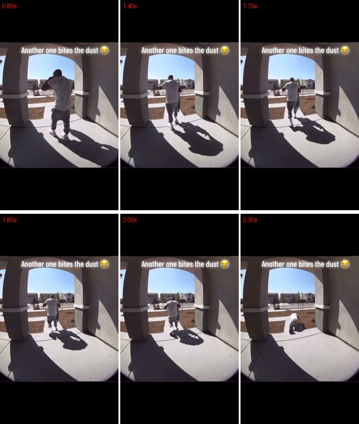
A bloke walks out under his porch and goes down the step at 2 seconds. 1.5M plays, posted by one person (@howhigh4.20 on TikTok).
Our half: the same doorbell-cam angle at someone's front door, 5am, one of us heading out in thongs and going over the pile of old boots on the step. The joke lands on the old pair, and our boots never fall. One person at home can shoot it.
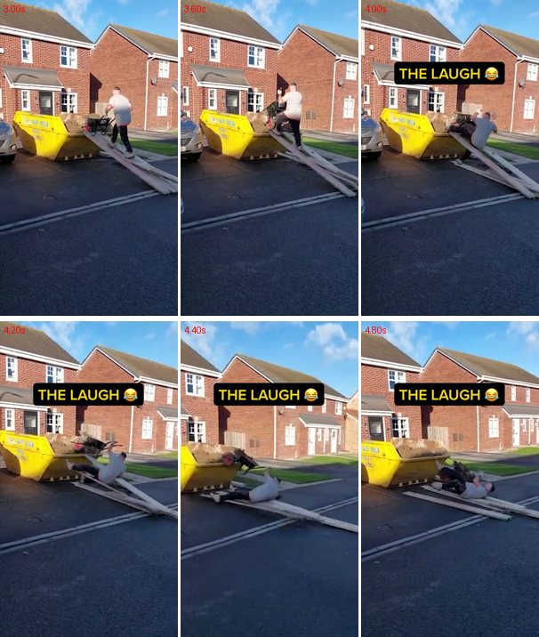
A UK bloke runs a full barrow up planks into a skip and comes off at about 4.3 seconds, then gets up laughing. 4.5M plays. Our world exactly. But it's from On The Tools, a trade media account, so a claim is likely.
Our half: Grant tipping an empty barrow off a plank onto grass.
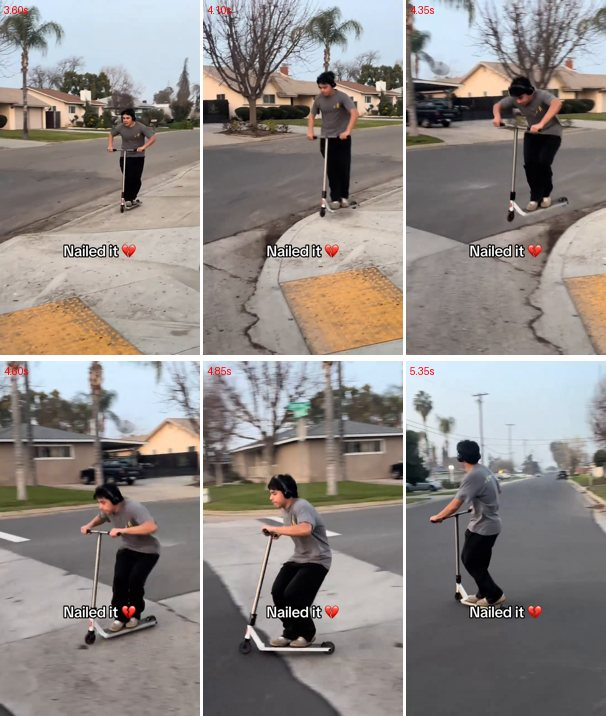
Closest to your idea: a kid on a kick scooter drops a kerb clean. 26M plays. Flip it: he nails it, cut to you trying the same kerb and stacking it. But it's House of Highlights, a big US sports media account. Highest risk of the three.
Same rails as before: the fall is at walking pace onto grass at a mate's place (council kerbs are off limits for filming), other shoes like you said, and no "pre-sale is open" because there's no public page yet. The line after the fall gets written and checked in the brief. Once you pick, I'll write the shot list so it can be filmed on any weekend.
Open the pollLong version: the content session notes for 11 Oct. This link is unlisted, but anyone holding it can open it.